Enfance (3-11 ans)
"L'important c'est qu'un enfant puisse toujours dire ce dont il a envie, mais pas toujours le faire." - Françoise Dolto
Scolarité
La Communauté de Communes Berry Loire Puisaye réunit 2 collèges (Briare et Châtillon-sur-Loire), 13 écoles publiques et une école privée, accueillant les élèves de la petite section au CM2.
Survolez un repère pour afficher les coordonnées de l'établissement.
Écoles du territoire
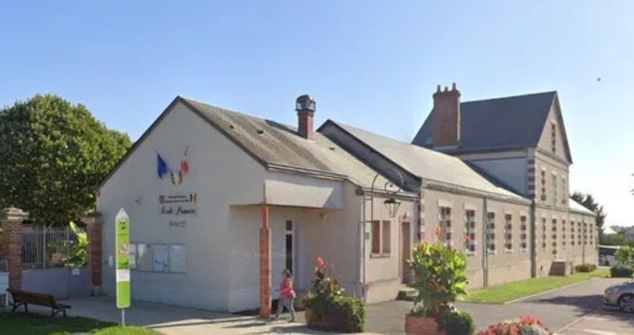
Autry-le-Châtel
Maternelle et élémentaire
14 rue de l'École (élémentaire)
route de Châtillon (maternelle)
📞 02 38 36 82 62 (élém.) - 02 38 36 81 88 (mat.)
✉️ ce.0450195T@ac-orleans-tours.fr (élém.)
✉️ ce.0450749V@ac-orleans-tours.fr (mat.)
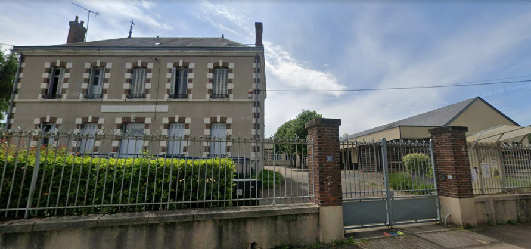
Beaulieu-sur-Loire
Maternelle et élémentaire
15 rue de Châtillon (élémentaire)
17 rue de Châtillon (maternelle)
📞 02.19.00.49.86 - 02.38.35.85.35
✉️ ce.0451398A@ac-orleans-tours.fr
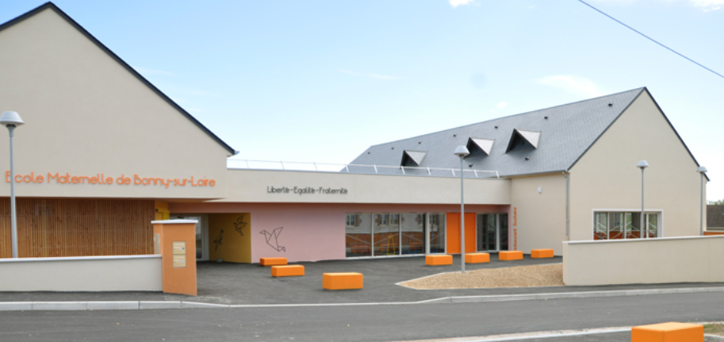
Bonny-sur-Loire
Regroupement pédagogique intercommunal avec les communes de Thou, Batilly-en-Puisaye, Dammarie-en-Puisaye et FaverellesMaternelle et élémentaire
2 avenue de la Gare
📞 02 38 31 63 57
✉️ ce.0450182D@ac-orleans-tours.fr
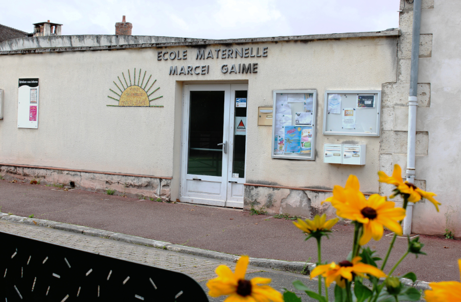
Briare - École Marcel Gaime
Maternelle
place Saint Roch
📞 02 38 31 25 85
✉️ ce.0450167M@ac-orleans-tours.fr
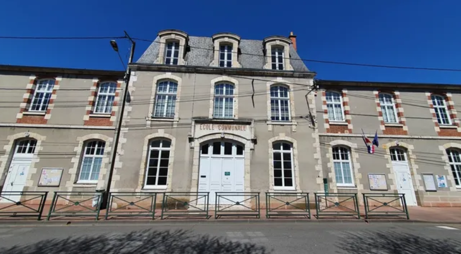
Briare - École du Centre
Élémentaire
3 square Foch
📞 02 38 31 26 49
✉️ ce.0450869A@ac-orleans-tours.fr
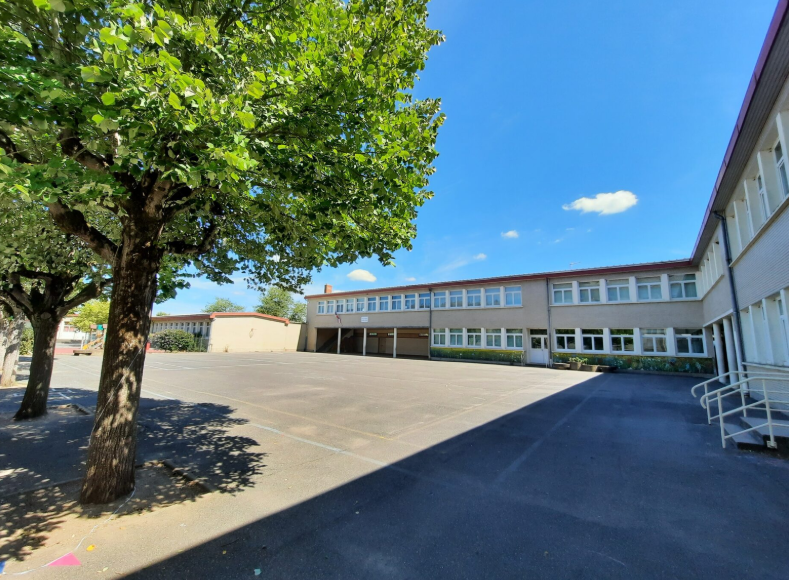
Briare - École Gustave Eiffel
Maternelle et élémentaire
7, rue de l'Espérance
📞 02 38 31 25 34
✉️ ce.0450178Z@ac-orleans-tours.fr
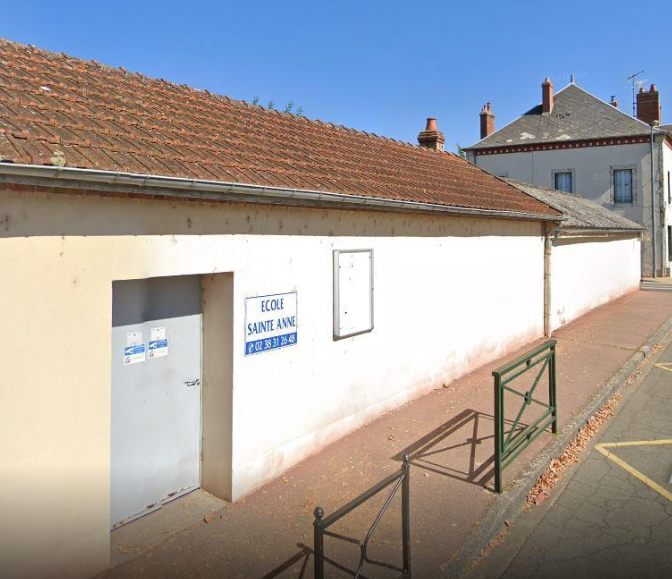
Briare - École Sainte-Anne
Maternelle et élémentaire (privée)
5, rue des Grands Jardins
📞 02 38 31 26 48
✉️ ce.0451522K@ac-orleans-tours.fr
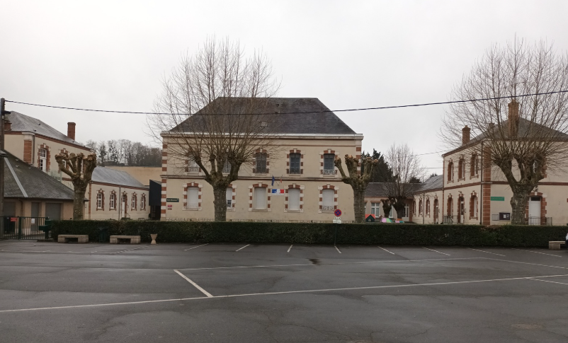
Châtillon-sur-Loire
Maternelle et élémentaire
place du Champ de Foire
📞 02 38 31 40 74
✉️ ce.0450881N@ac-orleans-tours.fr
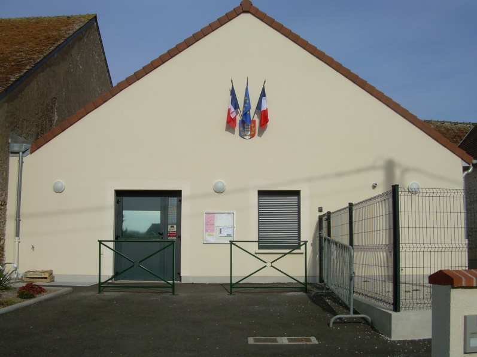
Ousson-sur-Loire
École primaire George Sand
11 rue de l'Abreuvoir (élémentaire)
2 bis rue des Marronniers (maternelle)
📞 02 38 31 00 51
✉️ ce.0450189L@ac-orleans-tours.fr
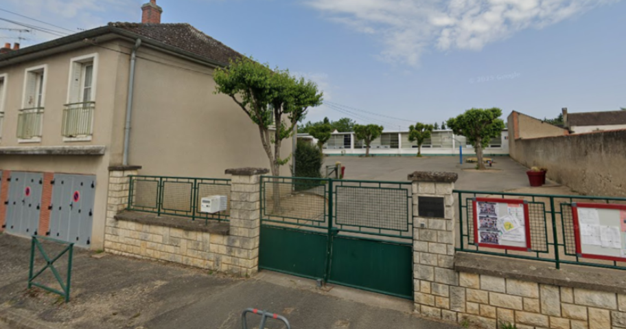
Ouzouër-sur-Trézée
École Jacques Prévert - Maternelle et élémentaire
14 rue de la Flamandière (élémentaire)
1 rue du Stade (maternelle)
📞 02 38 31 97 47
02 38 31 92 89
✉️ ce.0451269K@ac-orleans-tours.fr
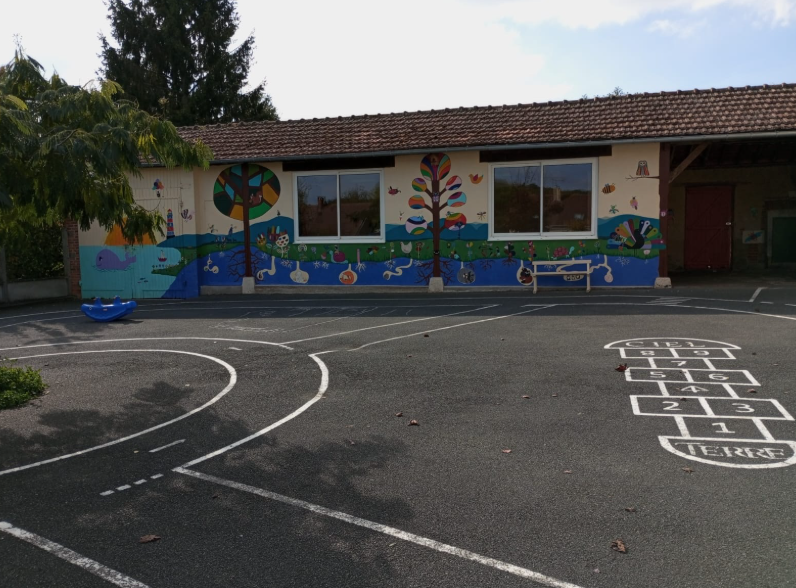
SIIS Cernoy-en-Berry / Pierrefitte-ès-Bois
• Cernoy-en-Berry : Maternelle, 5 rue d'Autry📞 02 38 31 01 00
✉️ ec-cernoy-en-berry@ac-orleans-tours.fr
• Pierrefitte-ès-Bois : Élémentaire, 7 rue de la Mairie
📞 02 38 31 08 13
✉️ ec-pierrefitte-es-bois@ac-orleans-tours.fr
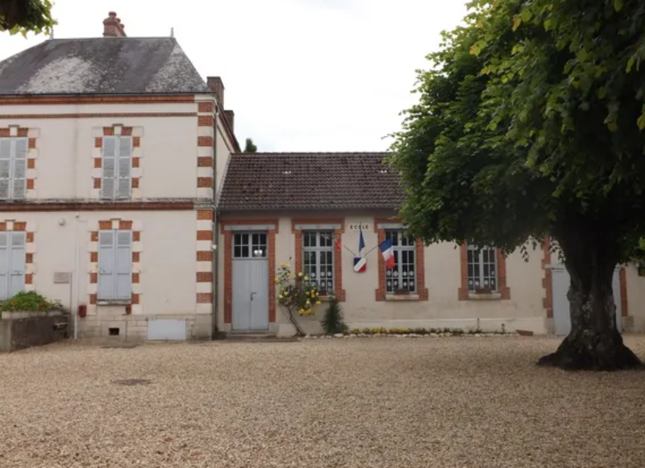
SIIS Adon / La Bussière
• Adon : 13 route de la Bussière📞 02 38 35 94 69
✉️ ce.0450175W@ac-orleans-tours.fr
• La Bussière : rue d'Ouzouer
📞 02 38 35 90 68
✉️ ce.0450184F@ac-orleans-tours.fr
CLAS - Contrat Local d'Accompagnement à la Scolarité
Trop souvent confondues avec une simple aide aux devoirs, les missions du Clas vont bien au-delà. Gratuits et ouverts à tous, les Clas sont des programmes de soutien à la scolarité, de l’école élémentaire au lycée. Ils sont organisés par des associations ou par les municipalités partenaires de la Caf. L’objectif est que l’enfant vive mieux sa scolarité : tout au long de l’année, les parents et les équipes enseignantes sont sollicités pour participer au suivi de l’enfant. Pour le moment, une seule commune de la Communauté de communes s’est engagé dans la démarche.
“ Le CLAS, c’est un accompagnement pour aider votre enfant à mieux réussir à l’école, mais aussi un soutien pour vous, parents, dans le suivi scolaire.
Votre enfant pourra :
- Faire une partie de ses devoirs avec un adulte qui l’aide si quelque chose est difficile,
- Apprendre à mieux s’organiser et à gagner confiance en lui,
- Participer à des activités socio-culturelles qui renforcent ses connaissances.
Et vous, parents, êtes au cœur du dispositif : on vous accompagne, on vous conseille pour suivre les progrès de votre enfant et pour vous aider à soutenir son apprentissage à la maison.
Le CLAS se fait en petit groupe, gratuitement, dans un cadre convivial et sécurisant. L’objectif est que chaque enfant avance à son rythme, avec le soutien de sa famille. ”
Bonny-sur-Loire
École élémentaire et EVS Bee Mobile
2 avenue de la Gare
📞 02 38 31 63 57
Un accompagnement pour aider votre enfant à mieux réussir à l'école et un soutien pour les parents dans le suivi scolaire.
Accueils périscolaires
L’organisation de l’année et des vacances scolaires peut vous conduire à rechercher un mode d’accueil pour votre enfant en dehors des heures d’école. Le territoire Berry Loire Puisaye est riche de 9 accueils périscolaire et 6 accueils de loisirs où votre (vos) enfant(s) sera (seront) accueilli(s)par des professionnels de qualité
Autry-le-Châtel
Contact en mairie les après-midis
Lun, mar, jeu, ven de 7h15 à 8h45 et de 16h30 à 18h30
8 rue de la Mairie
📞 02 38 36 80 59
📧 secretariat.mairie@autrylechatel.fr
Beaulieu-sur-Loire
Les Crayons de couleurs
Association Familles Rurales
Lun, mar, jeu, ven de 7h00 à 9h00 et de 16h15 à 18h30 / Mer de 7h30 à 18h30
15 route de Châtillon
📞 02 38 05 03 84
📧 lescrayonsdecouleurs@gmail.com
Bonny-sur-Loire
Contact en mairie
Lun, mar, jeu, ven de 7h30 à 8h50 et de 16h30 à 18h30
avenue de la gare
📞 02 38 29 59 00
📧 mairie@bonnysurloire.fr
Briare
L'inscription se fait par le portail famille
Lun, mar, jeu, ven 7h00 à 8h40 et de 16h20 à 18h00
📞 02 38 31 63 57
📧 guichetunique@villedebriare.fr
Châtillon-sur-Loire
Une permanence est assurée au bureau jusqu’à 10h30.
Lun., mar., jeu. et vend. de 7h00 à 8h45 et de 16h30 à 18h30.
place du Champ de Foire
📞 06 32 08 54 79
📧 centredeloisirs@chatillonsurloire.fr
Ousson-sur-Loire
Contact en mairie
Lun, mar, jeu, ven de 7h00 à 9h00 et de 16h30 à 18h30
2 bis rue des Marronniers
📞 02 38 31 44 56
📧 mairie@oussonsurloire.fr
Ouzouër-sur-Loire
Contact en mairie
Garderie sans inscription sauf le mercredi Lun, mar, jeu, ven de 7h00 à 9h00 et de 16h30 à 18h30
📞 02 38 31 93 90(mairie)
02 38 35 69 52(garderie uniquement sur les horaires de fonctionnement))
📧 mairie-secretariatg@ouzouer-trezee.fr
SIIS Adon - La Bussière
Regroupement sur la commune de La Bussière.
Contact en mairie
Lun, mar, jeu, ven de 7h15 à 8h30 et de 16h30 à 18h30 - Mer de 7h15 à 18h30
Une permanence est assurée au bureau jusqu’à 10h30.
1 route de Briare
📞 02 38 35 90 68
📧 contact@labussiere45.fr
SIIS Cernoy-en-Berry / Pierrefitte-ès-Bois
Regroupement sur la commune de Cernoy-en-Berry.
Contact en mairie
Lun, mar, jeu, ven de 7h00 à 9h00 et de 16h30 à 19h00
Une permanence est assurée au bureau jusqu’à 10h30.
2 rue de Concressault
📞 02 38 31 47 02
📧 siriscernoypierrefitte@cernoy-en-berry.fr
Accueil de loisirs
Autry-le-Châtel
Contact en mairie les après-midis
4 semaines en juillet de 7h00 à 18h30
8 rue de la Mairie
📞 02 38 36 80 59
📧 secretariat.mairie@autrylechatel.fr
Beaulieu-sur-Loire
Les Crayons de couleurs
Association Familles Rurales
Chaque vacances scolaires (sauf NOël) de 7h30 à 18h30
15 route de Châtillon
📞 02 38 05 03 84
📧 lescrayonsdecouleurs@gmail.com
Bonny-sur-Loire
Contact en mairie
La 1ère semaine des petites vacances sauf Noël du lundi au vendredi
en journée de 7h30 à 18h00 ou en demi-journée de 7h30 à 12h00 ou de 13h30 à 18h00
Le 1er mois d’été de 8h00 à 18h00
avenue de la gare
📞 02 38 29 59 00
📧 mairie@bonnysurloire.fr
Briare
L'inscription se fait par le portail famille
Inscription à la journée les mercredis et petites vacances scolaires
Inscriptions à la semaine pendant les grandes vacances scolaires
Arrivée entre 7h00 et 9h00 / Départ en 16h30 et 18h00
📞 02 38 31 67 55
📧 guichetunique@villedebriare.fr
Châtillon-sur-Loire
Une permanence est assurée au bureau jusqu’à 10h30.
Les mercredis : de 7h00 à 18h00 (journée complète) /de 7h00 à 12h15 (demi-journée) ou de 13h30 à 18h00 (demi-journée).
Les petites vacances : du lundi au vendredi, de 7h00 à 18h00
Les grandes vacances : du lundi au vendredi de 7h30 à 18h00 - (inscription uniquement sur des semaines complètes)
place du Champ de Foire
📞 06 32 08 54 79
📧 centredeloisirs@chatillonsurloire.fr
Ouzouër-sur-Loire
Contact en mairie
Les mercredis de 7h00 à 18h30 - Insciption possible par ½ journée (Repas et goûter non fournis)
📞 02 38 31 92 89(mairie)
02 38 35 69 52(garderie uniquement sur les horaires de fonctionnement))
📧 mairie-secretariatg@ouzouer-trezee.fr
La Bussière
Contact en mairie
Les mercredis de 7h15 à 18h30
Vacances de la Toussaint, d’hiver et de printemps
(ouverture la 1ère semaine uniquement) de 7h30 à 18h00
Une permanence est assurée au bureau jusqu’à 10h30.
1 route de Briare
📞 02 38 35 90 68
📧 contact@labussiere45.fr